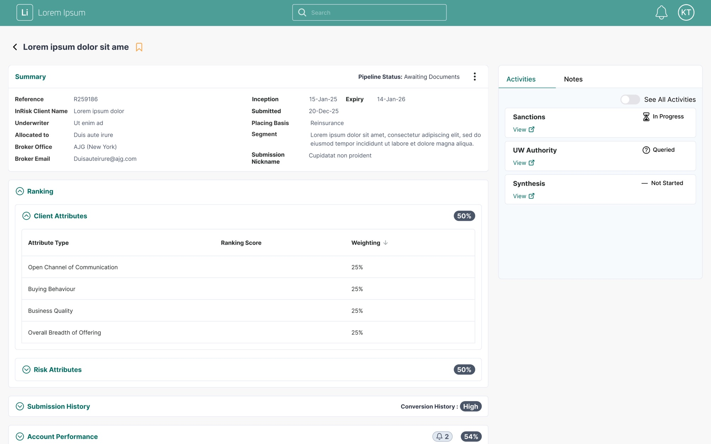
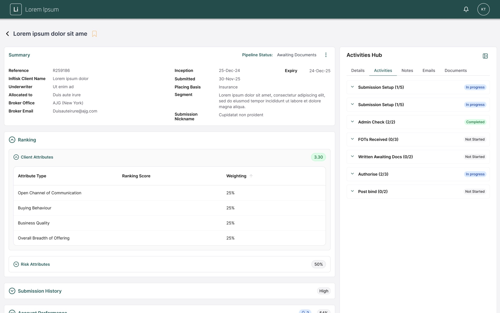
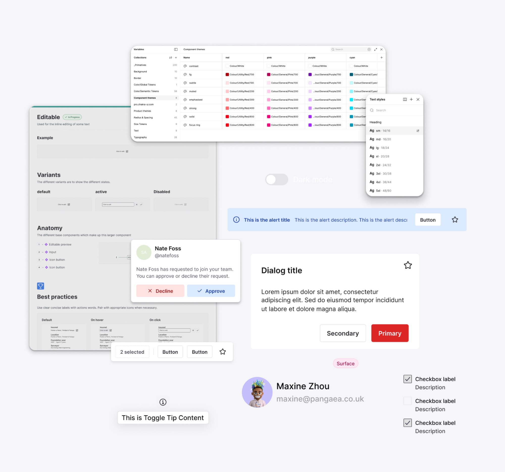
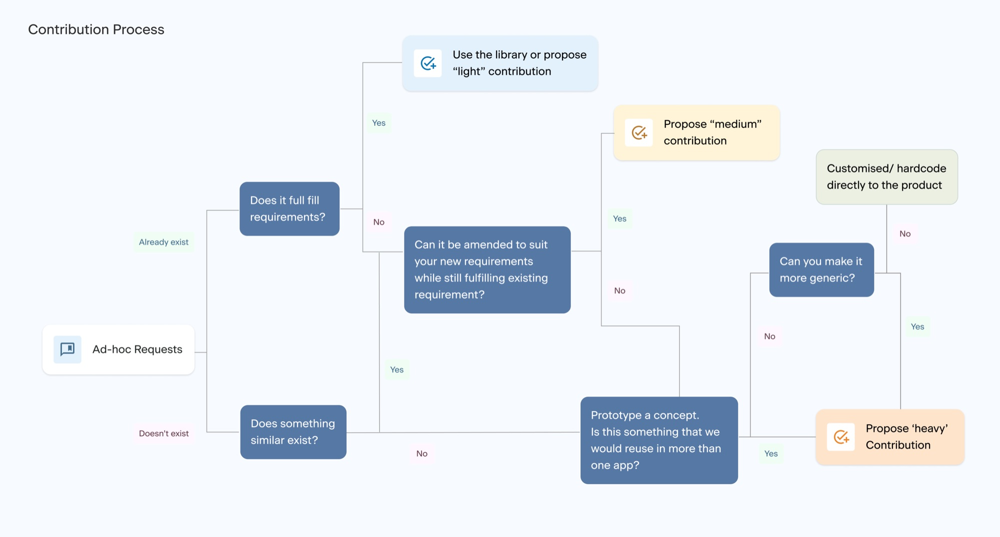
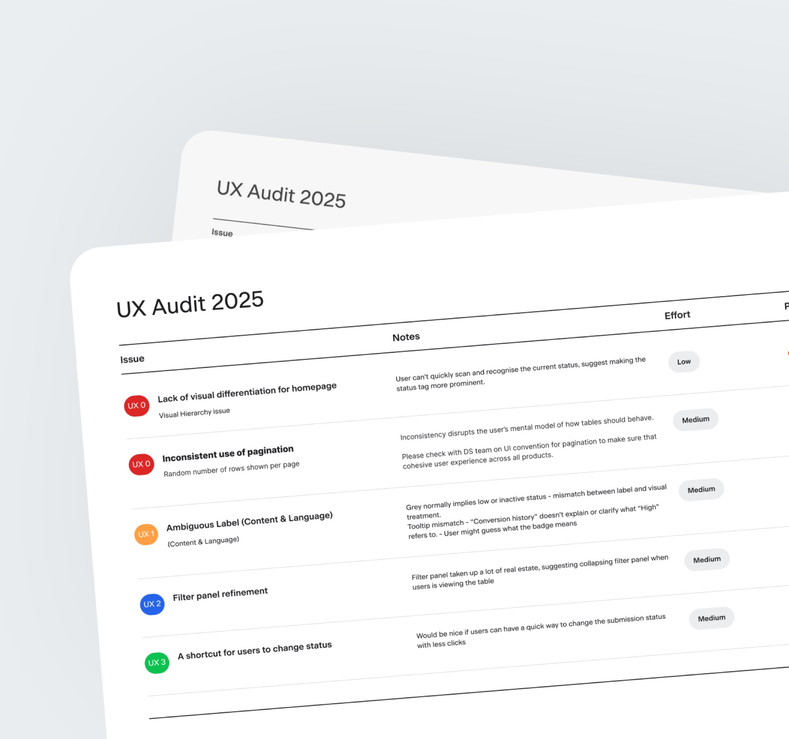
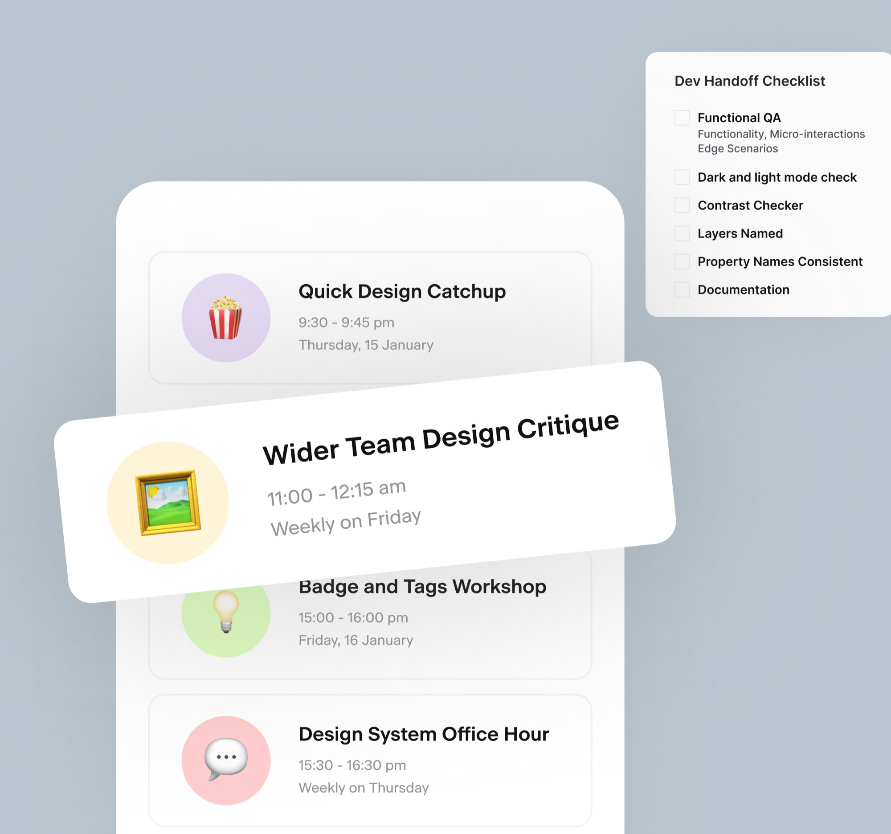
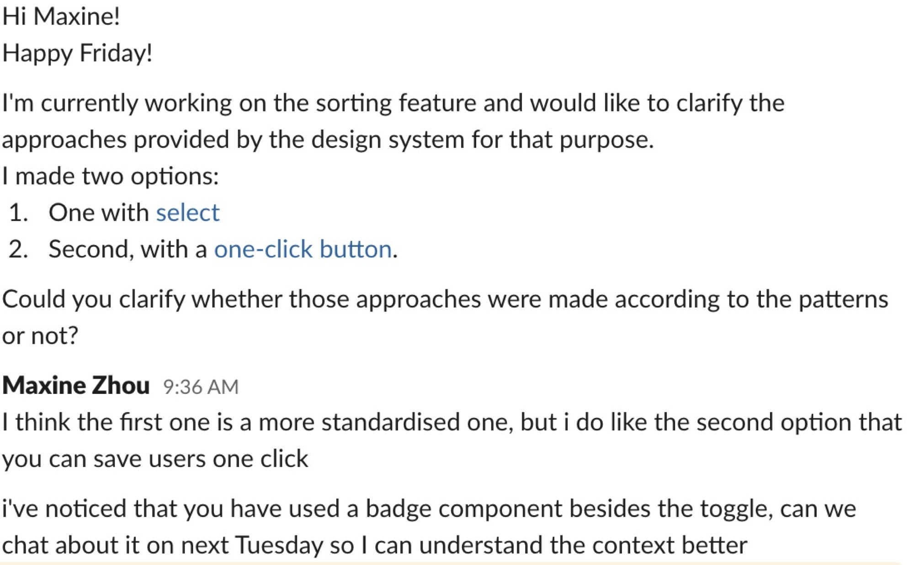

- Design System
- Design Ops
- InsurTech
- Strategy
- 2025
Convex Design System
Enterprise design system migration
Led a design system migration across a 16-product insurance ecosystem, cutting custom components by 94% and establishing governance across three design agencies.
Overview
Our Design Team
- Design System Designer (me)
- Design Manager
Timeline
March – December 2025 (10 months)
My Core Deliverables
- Four products migrated, three in active progress
- Design library fully built, aligned with Storybook
- Documentation and governance frameworks established
- Design team culture transformed from siloed to collaborative
- Client set up to scale the system independently
Impacts
The Challenge
The client operated 16+ products built by multiple contractors, with significant operational challenges:
- 83% of design work required custom components, due to the limitations of the existing design system
- Three separate design agencies worked in silos, with inconsistent practices
- Designers skipped collaboration meetings and worked independently
- Fragmented user experiences across the product portfolio
- No clear governance on when or how to extend the design system
What my role brought
- Build and organise the design library and documentation
- Provide design system services and support to designers across agencies
- Establish governance processes for consistent adoption
- Lead a pilot migration to demonstrate value and approach
- Transform team culture from siloed to collaborative
Before
Ad-hoc components, inconsistent spacing, and a narrower activities panel with no tab structure.

After
Design system components throughout, semantic tokens, and a fuller Activities Hub with five tabs.

Four phases over ten months
Phase 1
Foundation building
- Built the Design Library covering the full product ecosystem
- Tokenised design foundations and component documentation
- Established a cleaned-up Storybook as the single source of truth
- Provided designer support infrastructure across all three agencies


Phase 2
Governance & Quality Assurance
- Conducted UX audits and regular design check-ins across agencies to identify drift
- Documented an Exception Framework for when deviations make sense, balancing system integrity with design flexibility
- Hosted pattern workshops across agencies to identify reusable patterns
The Challenge I faced at Phase 2
While reviewing mockups I noticed many components were heavily customised — spacing, padding and text weights all differed from the design system.
Product designers wanted to preserve user familiarity.
The design system manager questioned the purpose of migration if the visuals stayed unchanged.
- Clarified intent:
Migration means technical adoption and gradual alignment, not forced visual conformity. - Defined a path forward:
Phase 1 — design system components with overrides;
Phase 2 — reassess after research and user acceptance testing. - Process improvement:
Proposed an Exception Framework to document justified divergences from the system.
Phase 3
Strategic Migration
We ran a low-risk pilot on a simple product to validate the process and build team confidence, then migrated the essential product to showcase impact.
During migration, we fixed some UX issues, applied semantic tokens, and improved predictability with a unified visual language.
Result: 35% → 2% custom components


Phase 4
Scaling & Enablement
- Transformed siloed agencies into a collaborative community
- Completed four product migrations, three in progress, planned completion by the end of the year
- Client equipped to continue independently with established processes
Impact for the business
- Drastic reduction in design and handoff time as system coverage grew
- A migration approach proven through a pilot that other teams can replicate
- The team now owns and evolves the design system together
Reflection and learnings
- Design system migration is as much about people and process as components. Building trust by supporting designers proactively is the key.
- I came to understand the importance of change management: balancing consistency against designers' real needs.
- Stakeholder communication and systems thinking are essential.
- Finally, I learnt to choose the battle. We paused migration on one product with fewer than 10 active users — its designers were reluctant to migrate our way, and re-onboarding them at every check-in was costing more than it returned.
Weekly updates kept adoption visible
Release notes in the open, every week. Designers stopped being surprised by a change, which is most of what trust in a design system actually is.
The real signal of success
Designers coming to the system before building around it. Nobody asked them to — the question simply became easier than the workaround.
